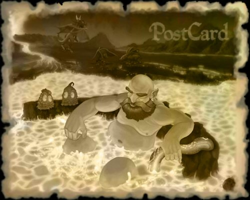

It’s October and the postie is hopping around the world again collecting replies to your questions! This month we look at why rats run widdershins, ask chaos dwarves how they remain so cool and we finally get that long* awaited reply from the Wise Old Man!
(* Long as in long-winded)
I know you must be extremely busy at the moment, with all the planned expansion and renovation to your museum, but I would appreciate the answer to a question burning in my mind about a certain exhibit in the museum's possession. In your upstairs rooms, you have an exhibit on the great desert lands to the south of Varrock. On a recent visit to your museum, I was intrigued very much by these artefacts, as I have made many journeys to the Desert and wished to know a little more of its history than I know currently. In your selection of items from the Desert, you have a throne and 2 coffins. As I was examining the throne and the left hand coffin, I noticed crest upon them. I gazed in wonder and amazement as I realized the two crests were actually those of the Kingdom of Asgarnia. I even journeyed the great distance that separates the two great cities of Varrock and Falador to be sure of this discovery. I was wondering, could you possibly tell me more of this strange thing I have beheld? Was I truly seeing the crest of Asgarnia that was placed upon items brought from the Desert?
If this was true, how is that possible? For the Kingdom of Asgarnia and the Desert is far apart, and why would the great peoples of the desert place such a crest on these items?
I thank you for all the possible information you can provide. For your help, I would gladly make a donation to the renovation and expansion of your museum if you would please direct me how to do that.
Thank you,
2britishspy
Dear 2britishspy,
Well, I must say I am shocked by your revelation. As you might know, I don’t spend much time upstairs, but I had always trusted the knowledge of our experts to deliver only the finest quality exhibits. Now the very reputation of the Museum lies in ruins… and fake ruins at that.
I believe these particular examples came from our “Northern Desert History Expert”… a Dr Ali. He described them to us as the “finest in Kharidian craftsmanship”, yet now I realise they are just some shoddy Faladian knick-knack! Rest assured, next time I visit him I will be leaving with more than just a fake beard.
I will make sure that the exhibits are changed for next year’s grand re-opening! Let’s hope your contributions will be well received.
Yours rather un-prehystorically,
Haig Halen
Varrock Museum Curator
Please respond whoever thought of this idea.
Sincerely, Pure K O
P.S. I kept calling the chairs noobs but they wouldn't stop following me... I even threatened to take them to the wilderness... Persistant chairs!
Well, it was difficult to get an answer for this one since nobody was available for comment.
The count himself was busy at a stake-out.
The visiting mummy from Sophanem was far too wrapped up in his own worries.
“Pipey” the skeleton was off looking for undead chickens (I wished him bone voyage and bone appetit).
The cursed trees didn’t want to branch out into furniture design.
I wonder if Draynor Manor has a Chairman?
Sorry about that…
Pete
Dear Almighty Choas Dwarf,
I have been honored by your presence on numerous occasions. I've traveled down to Taverly Dungeon (your residence) on missions such as threatening Prince Darian, or cooking up a lava eel or two . . . But I have found the heat unbearable. By the time I'm out of there, my skin is dry as parchment and sweat coats my body. It was obviously my armor that was increasing the heat, but I've tried removing my armor before going into the dungeon, and yet the heat seems quite determined to drive me mad. Whenever I travel down to your lair, I observe you with amazement. You have every inch of your body covered in thick,heat-retaining armor. And yet I do not see even a drop of sweat . . . not even a swift wiping of the brow. Are you impervious to the all-powerful heat? Why, I've even seen the remains of a fire down there every so often. A fire! As if it weren't hot enough! What is your secret? Do you use your chaotic dark powers to create an anti-heat aura around you? Or is it simply that, because you have lived there all your life, the heat doesn't bother you in the least? Please, bestow upon me your secrets.
Humbly Yours,
Gamefreak318
Dear Gamefreak318,
It's simple really, you just need to build up a tolerance for heat. Why not take a bath with the lava eels! They make great loofahs...
Wish you were here,
Redburn

Yes you, the wee tim'rous scurryin' beasties, not the great grey villains who sit an' mope all day. Why is it ye all run in a circle widdershins and never wi' the sun? If ye do it now ye will drill a girt hole in't ground and descend to Evil Dave's basement, transformed intae sulphurous stinkin' red Hell Rats.
Unwind yersels forbye, sith the doom be upon ye!
Mad Max Magi
P.S. Maybe the wee Hell Rats have bigger cousins, I hadnae thought of that...
Mad Max Magi,
Ye be tryin’ tae hornswaggle ol’ rat? Ye old drivelswigger! Abaft the rat be the terror of the high seas, he be binnacled on a floatin’ paradise, all cheese duffle an’ no mistake. All is quaking ‘neath the rats. Blackrat he be called an’ there be no ship a-floatin’ ‘gainst his wind.
Afearred of the rats, a curse be laid upon the island an lightnin’ come athwartships, cleavin’ the mast an sinkin’ ol’ Blackrat. Rats too cocky, never watchin’ their backs… never be ready for death! Rats fled to the high seas, leapin’ an’ a jumpin’ in Davey’s grip, always be turning back case the curse be followin’ them.
Rats is never makin’ same mistake twice… but we is running widdershins… pink eyes is never loving sunwards….
Blackrat the Pie Rat MCXVIII
Sunset shine! Sunset shine! But the dwarves couldnt bear to look!
Sunset set! Sunset set! And the dwarves reach their hand out and took a pickaxe!
Everythin's same in mine! Everythin's same in mine! The dwarves rushed forward for a scorpy!
War fills the mine! War fills the mine! It was loud and excitin' in the mine! The scorpies snip their claws! The dwarves' picks broke!
War fills the mine! War fills the mine! You no wats gonna happeeeeeeeen last! Some dwarfygot knocked out of their cave! Scorpies laugh horribe laughs!
.. . .
Oh sad endin' oh sad endin' the dwarf loose. The scorpy win. Ohhh, nextime, dwarf will win!
I said, do not get freaked out!
Dwarf and scorpy poem by Scyther148
Well. I tried to take it to the dwarves, but it confused them. Apparently they aren’t that musical unless it’s about beer and gold. So, I took it to someone with a far greater appreciation of music… and randomness…
Zippy Scyther148,
Dress up big like a flappy bird, happy bird
Hunter strong when the ferrets herd, heretic’s word
Flappy high with twelve willow branches, brillo lunches
Bandos down with hail of punches, pail of hunches
Impy sheep new and shiny, sew and ninely
Curator taught but the kids are whiny, wilds not kindly
Izso easy to make troll king shiver, shoal thing river
Pick it up with the undead quiver, quintet liver
Sing the song for shantay claws, clumpy gores
Seasons pass for animal lores, magical chores
Penguin eyes are low and evil, crunchy weevil
Brutal way for shark retrieval, rather medieval
Trawl along the ancient bed, sucker’s head
Dwarf and scorp are almost dead... Almost dead.
Chaos E
I'd like to tell ye I'm a great fan of Trouble Brewing, and also from ye. Ye're the swashbuckliest, keelhauliest, scurviest pirate on Mos' Le Harmless. Arr, that it be!
Next, I want to ask ye some questions:
- Why arr ye called Honest Jimmy?
- What are the parrots in The Distilleries called?
- What exactly is 'the stuff'?
- Where do ye get those Navy outfits?
- Why can't I withdraw something from that scurvy deposit box?
- Do ye know Bill Teach?
Yuccon, a pirate wannabe.
Avast, Yuccon!
'Tis always good to find ye've got a fan, even if they are only a fresh-off-the-boat pirate wannabe. Keep up the pirate talk and I'm sure ye'll be a full blooded, 'rum' swillin' buccaneer in no time! Before I start gettin' all bashful, let’s take a look at yer questions.
- Because I'm the most honest pirate on the island. By that, of course, I mean I'm the most honest about bein' a cutlass-wavin' dishonorable sea-dog.
- San Fan's parrot be called 'Cinders' after the first distillery went up in smoke. Dan calls his Parrot 'The General', because he's a foppish sort of fellow.
- I'd tell ye, but then I'd have to kill ye.
- In the navy, where you can sail the seven seas. Tis astonishin' how easily ye can get yer hands on some slightly-soiled navy clothing when yer a pirate.
- Because if ye opened the box ye'd see that I'm takin' yer goods, and postin' an inferior replica to yer bank, and sellin' yer own items te the pirates in port, that's why. Don't tell anyone, mind: just our secret.
- No. Wait, yes! Yes, I do, and he owes me some monies. I'm sure he'd thank ye if ye'd pay in his stead.
Well, the warnin' bell be ringin' and the smoke is pretty thick, so it looks like another game is almost over. I'm off te peddle me wares te the others. Keep workin' on yer piratespeak!
Honest Jimmy.
*Those of you mildly confused by Honest Jimmy’s method of talking (I’m sure he’d call it his ‘unique parlance’) might like to consult the Book o’ Piracy in-game, which has recently been updated.
Why did you rob the bank in Draynor village? Why didn’t you teleport somewhere like Varrock or Falador or Edgeville? Also, WHAT DID YOU DO WIITH ELFINLOCKS? Give her back her bloo party hat! That wasn’t nice! Go to your room! Also, what the hack is under that bed? Heck, it’s fun to kick, so jagex, don’t you dare mess with that! I thought it was something like a lesser demon from something it said, and also, could you hurry up with destroying the wizard’s tower again? I want that bridge to blow up of dynamite! Why can’t you blow it up with that Saradomin staff? Why am I asking so many questions?
Your almost-banned and currently muted criminal hater,
Marioman318
Dear Marioman318,
I gather from your letter that you have been quite assiduous in your studies of my little house and my recent activities. Well, my dear chap, I shall start by thanking you for your interest and enthusiasm! It gives me a great sense of satisfaction to see that the world has not forgotten me since I retired from my adventurous life.
In the course of my little escapade in the bank, your friend Elfinlocks was unfortunate enough to get in my way and I was forced to incapacitate her. Now you have written me a letter demanding that I right her wrongs. However, perhaps it has not occurred to you that, even if I were to accede to your curt request, it would not benefit you in the slightest!
Allow me to elaborate. In the distant past, when I travelled the world solving people's problems and saving those in distress just as you do today, I held the hope that my efforts would be appreciated and met with appropriate gratitude. But what did I get? When I grew old and the time came for me to retire, I found myself forced into this poxy shack in Draynor Village, neighboured by a pigment-obsessed hag and a 'navigator' whose prowess at knitting exceeds his ability to steer a boat. Not to mention the constant flow of unashamed thieves through the village market! (The hideous harpy who sits gawking through my window will gladly show you a picture of the house as it was when I first came here.) My meek and placid nature notwithstanding, I realised that if I did not take my reward for myself, I would receive nothing at all. So I took up my trusty staff and headed for the bank. I am sure you would be likewise frustrated beyond belief if you were to dedicate a lifetime's effort to the service of others and receive no reward.
Now, let me return to your other questions. I chose the Draynor Village bank because it is convenient and local. Rural branches of banks are useful, and we should make full use of them. Otherwise there may come a day when the Bank of RuneScape closes its outlying branches and the Council has them transformed into trendy wine-bars.
I am indeed mystified by the matter of that creature under my bed. Many times I have persuaded willing folk to rid me of the nuisance, but always it returns. I suspect it to be a subterranean creature forced out of its natural habitat by those ridiculously attired xenophobes who call themselves HAM. On account of its incessant snoring at night, it is not welcome to seek asylum under my bed, and I shall continue to send people to deal with it until it ceases to trouble me.
Finally we come to the question of the Wizards' Tower. As you may have noticed, I have been training my telescope on it for quite some time now. I have not yet finalised my plans, but I do find myself terribly short of runes these days, and I feel that a short excursion to the Tower might solve my problem permanently. But I doubt I will make any move for a considerable time; the powers of Wizard Traiborn are not to be underestimated.
I thank you again for your letter.
Strength through wisdom,
*D.
This month… TzHaar! Yes, Uncle Wommy has been researching these odd chaps and has started compiling a dictionary of words. Now, the words don’t work in the same way as our words, so it’s more about the emotion and passion behind the word rather than the literal translation. Apparently.
Jal = Alien, Foreign, Not TzHaar
Mej = Priest, Mage, Magic, also loosely translates as Mother/Father
Xil = Hunter, Killer, Dangerous, Sharp
Kul = Token, Value
Zek = Attack, Harm
Kot = Protect, Save
Kl = Us, We
E = The, It
Now don’t forget, I love your pictures but I want to see those letters still coming in! The postbag has been a little light this month and I’m beginning to feel a little unloved! (sniff)
Don’t forget – when you send us your amazing creations we can’t accept links, so please don’t send them to us!
Next month… stuff!
Postie Pete
| Write your letters and send your pictures to |  |

|
More articles in Postbag from the Hedge
|
|